Welcome to Pissouri Bay
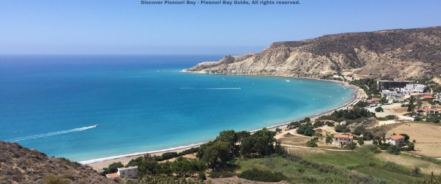Pissouri Bay is a crescent-shaped coastal area on the southern coast of Cyprus, known for its clean waters, pebble-and-sandy beach and relaxed atmosphere. The bay sits below the charming Pissouri village and is framed by white cliffs in places, offering striking coastal views for walkers and photographers.
This guide collects history, practical tips, food & stay recommendations and a long list of activities so you can plan a thorough visit.
About the Bay and Village
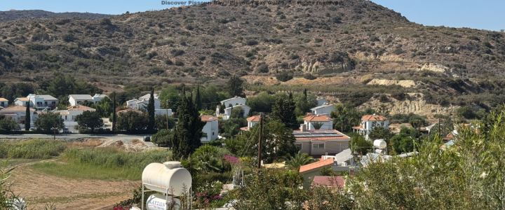Pissouri Village is a traditional Cypriot village perched on a ridge overlooking the bay. Historically agricultural, it retains narrow streets, stone houses and a village square lined with tavernas. The bay itself developed into a quieter resort area, with villas, small hotels and guesthouses dotting the coastline.
Visitors commonly combine time on the beach with evenings in the village — enjoying mezze, local wine and live music at seasonal tavernas.
Why people love Pissouri Bay
- Less crowded than larger resorts — relaxed vibe
- Good water quality and Blue Flag awards in some years
- Easy access to both Limassol and Paphos for day trips
- Traditional village culture and good local food
Beaches & Coastline
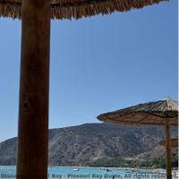 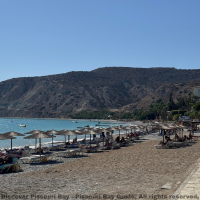 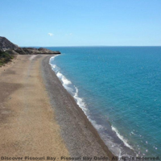Pissouri Beach stretches as a curved bay with a mix of shingle and finer sand. Protected by Cape Aspro's cliffs on one side, the beach offers sheltered water ideal for swimming. The beach is often awarded Blue Flag status — a mark of cleanliness and facilities at times — so you'll find lifeguards and maintained areas in high season.
Sunbeds & umbrellas, a handful of watersport vendors, toilets and nearby cafes. Parking is available close to the main beach access points.
Walk the headland — for a short coastal walk with excellent photo opportunities, take the path towards the headland where the cliffs reveal the bay from above.
Things to Do
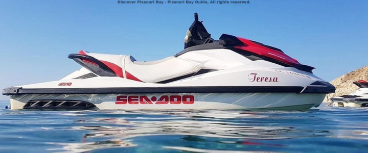Water & Beach
- Swimming & sunbathing
- Snorkeling along the rocky edges
- Kayak and paddleboard hire in season
- Boat trips from local operators to nearby coves
Land & Culture
- Explore Pissouri Village: tavernas, shops, and village festivals
- Hiking in nearby hills and short coastal trails
- Day trips to Kourion archaeological site and ancient amphitheatre
- Wine-tasting tours in Limassol/Paphos region
Restaurants and Taverns
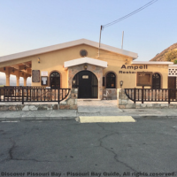 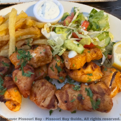 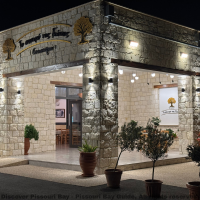The area offers a mix of family-run tavernas and resort restaurants. Expect classic Cypriot mezze, fresh fish, grilled meats, halloumi and locally produced wines. Dining tends to be casual and friendly — ask locals for the day's catch and house specials.
Restaurants to visit:
- Ampeli Restaurant
- Melanda Beach Restaurant
- The Bay Tree
- Hill View Restaurant
- Το σπιτικό της Γιώτας Εστιατόριο
- The Little Cafe On The Corner
Where to Stay
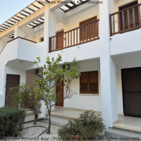 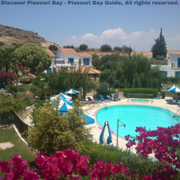 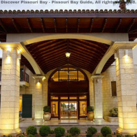Pissouri Bay offers small hotels, family-run guesthouses, villas and a handful of larger resorts. Expect relaxed, low-rise accommodation rather than high-rise developments. Book in advance for July–August.
Places to stay:
- Skeleas Pissouri Apartments
- Pelekanos Apartments
- Columbia Beach Resort
- Hylatio Tourist Village
History & Local Stories
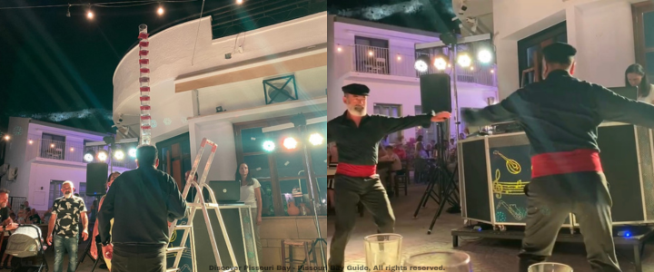Pissouri and its bay have a long local history tied to agriculture and coastal fishing. The village architecture and narrow streets reflect the island's rural traditions. We reccommend visiting the Pissouri Village for yearly cyprus nights. Over recent decades the bay developed into a low-key holiday destination favored by travelers seeking tranquility.